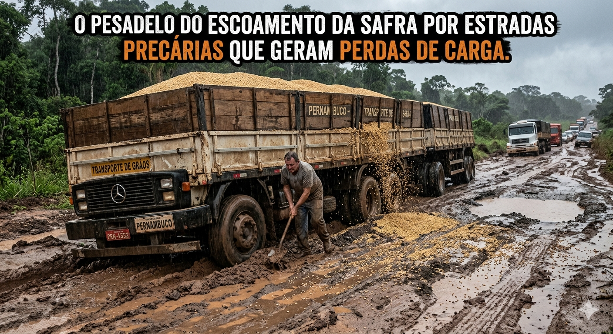
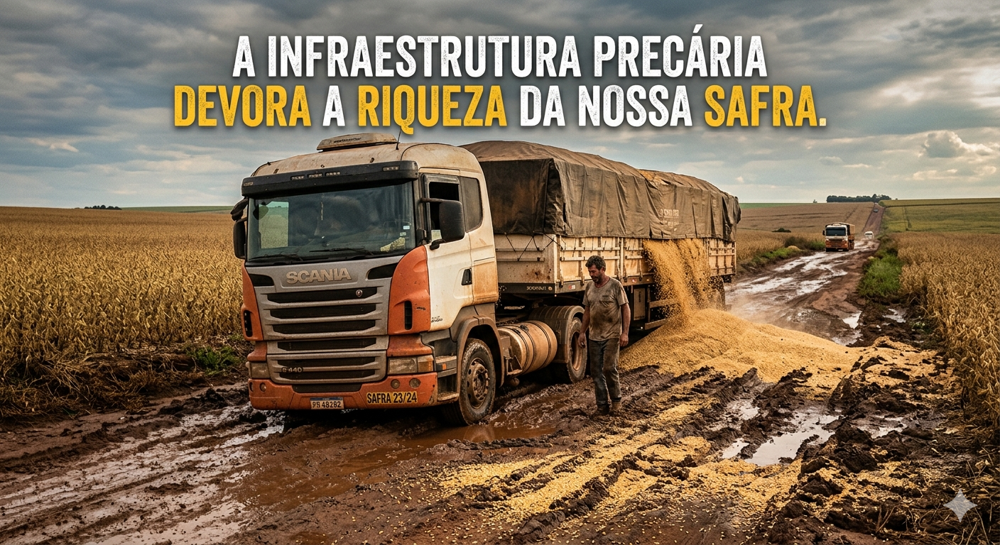

A qualidade das estradas brasileiras reflete diretamente no bolso de quem produz. Segundo os levantamentos mais recentes da CNT:
Condições deficientes: Mais de metade da malha rodoviária pavimentada avaliada apresenta algum tipo de problema (classificada como regular, ruim ou péssima).
Custo operacional: A falta de manutenção, buracos e a falta de pavimentação geram um aumento médio de mais de 30% no custo operacional do transporte (em estados com pior infraestrutura, como o Amazonas e partes do Centro-Oeste/Norte, esse impacto passa dos 57%).
Consumo de combustível: O asfalto ruim obriga os caminhões a trafegarem em marchas reduzidas e velocidades inconstantes. Estima-se que milhões de litros de óleo diesel sejam desperdiçados anualmente apenas pelo desgaste das vias, elevando o custo do frete e as emissões de gases poluentes.
As perdas de grãos (principalmente soja e milho) durante o trajeto não acontecem por acaso. Elas são o resultado direto de uma combinação de fatores estruturais:
Impacto estrutural: O balanço severo dos caminhões em pistas esburacadas ou costelas de vaca (vias de terra) faz com que os grãos vazem pelas frestas das carrocerias e das "bicas" de descarga.
Tombamentos e acidentes: Rodovias sem acostamento, com sinalização precária e curvas mal projetadas aumentam drasticamente o índice de sinistros, onde cargas inteiras são perdidas de uma só vez.
Frota e Vedação: Embora o agronegócio utilize frotas modernas, a trepidação violenta e contínua afrouxa as amarrações e rasga as lonas de proteção.
O Impacto Invisível: O desperdício nas estradas não é apenas financeiro. Perder grãos no asfalto significa que a terra, os fertilizantes, a água e o combustível utilizados desde o plantio até a colheita também foram jogados fora.
O "Custo Brasil" logístico reduz drasticamente a margem de lucro do produtor e afeta a competitividade internacional. Enquanto concorrentes diretos (como os EUA) utilizam amplamente hidrovias e ferrovias — modais mais baratos e de maior capacidade —, o Brasil ainda patina no asfalto.
Falta de armazenagem: Como a capacidade de armazenagem estática no país é historicamente menor do que o volume produzido, o produtor é obrigado a escoar a safra imediatamente após a colheita, gerando picos de demanda por frete e filas quilométricas em portos e ferrovias saturadas.
Prejuízo Bilionário: Estima-se que o Brasil perca de 1% a 2% de toda a sua safra de grãos apenas no transporte. Em safras que superam as 300 milhões de toneladas, isso equivale a milhões de toneladas de alimentos que viram poeira nas margens das estradas.
Obs.: Essas foram algumas das maiores altas registradas no grupo alimentação em maio de 2026.
